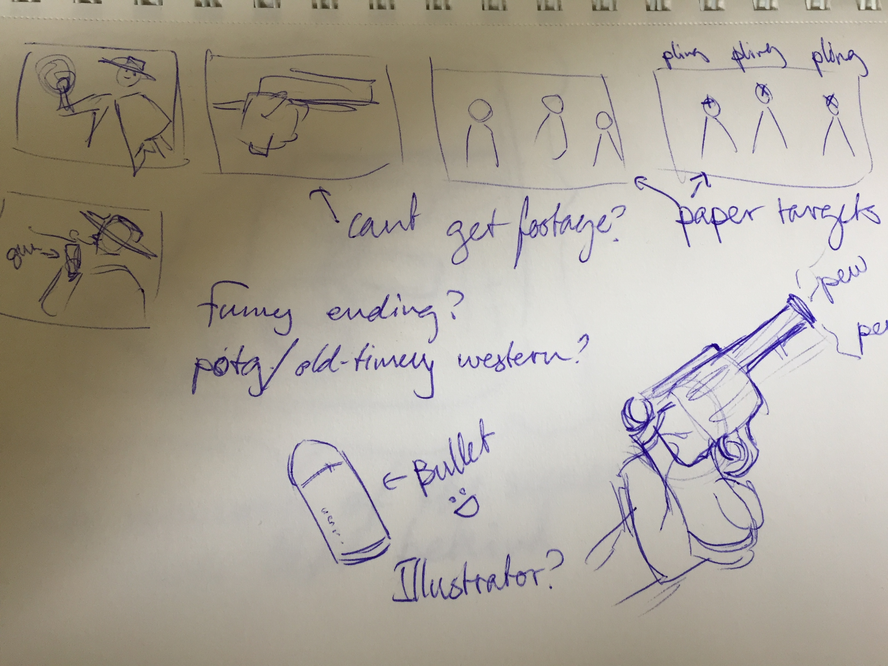
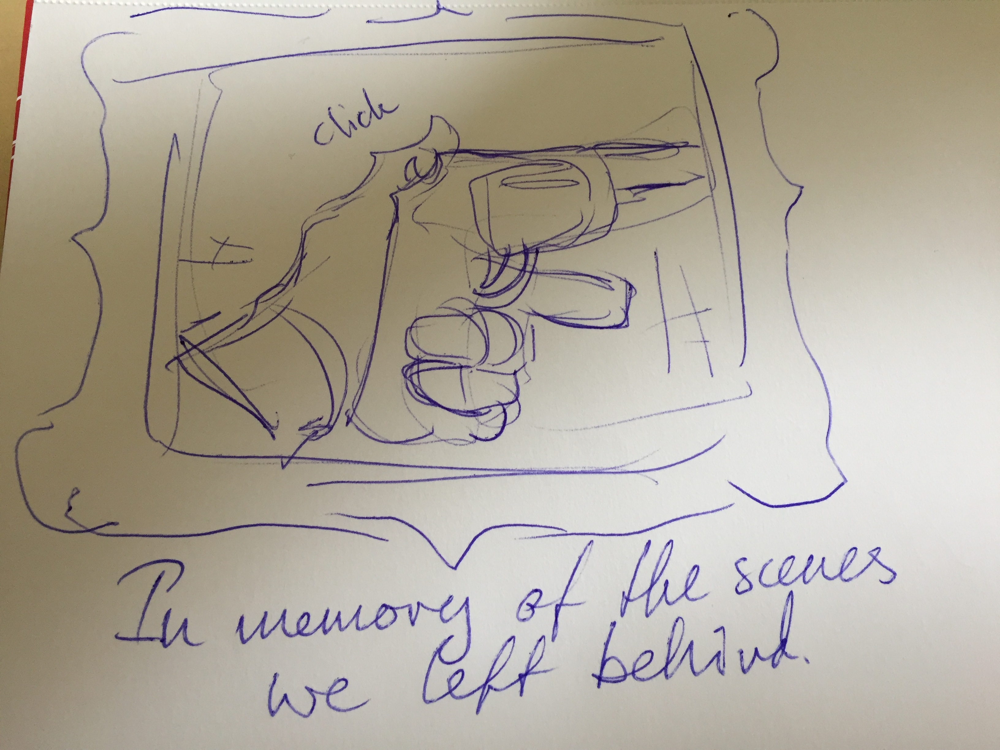

I’ve used after effects before during my course at SDE called Digital Media, so I already had some semblance of skill with using its tools before we had classes about it at UCL.
I created a super short 10-second video which turned into a mock-play-of-the-game from Overwatch (A popular shooter-game). Due to the game’s popularity it was surprisingly easy to find characters with a somewhat clear background in good quality. I chose the character Mccree to work with as I had already started forming an idea in my head to have him shoot some dummy-targets.
The dummy targets, I decided, would be old vaudeville crop-outs, which would help train my usage of masks and transformations.
I created a super rough storyboard to work from:

From there I started out with finding materials, backgrounds, clips to use and started setting up my scenes.
I created three ‘compositions’ with two being very similar ones, focused on Mccree with a foggy background and some trees and a composition with the targets being shot down.
In my storyboard I had envisioned having a transition scene where he aims the gun, but sadly I wasn’t able to find any footage I could work with.

I think what I had the most trouble with was getting the white background to dissappear without also turning the character ghostly and with weird spots around the corners of the frame.
Luckily, I managed to fix this issue by simply switching from trying to use key light and instead using color range to remove the background.
About midway through the process I was getting bored. I wanted this video to be funny or uplifting, something other than just another badly edited potg-rip offs. In the end, of course it is still just a badly edited potg-ripoff, but at least I hope I put a spin on it and if nothing else at least I feel a little more confident about my after effect skills.
But back to it having to be funny.
I was looking for ‘pling’ sounds for when Mccree shoots the targets, and stumbled upon a bunch of soundfiles of men yelling “no” or variations thereof which I thought would be funny to put throughout the video.
As the cherry on top, I put a very old, very low quality video at the very end of the person presumeably yelling ‘no’ (i.e. the person who didnt get potg) smacking their computer.
Along with the vaudeville cut-outs, I was hoping this would maybe be perceived as an ‘oldtimey’ version of Overwatch or something similar.
This is my final video:
I cant honestly say that I am satisfied with my work, and may update this page in the future with a different project that I can more confidently say I'm proud of.